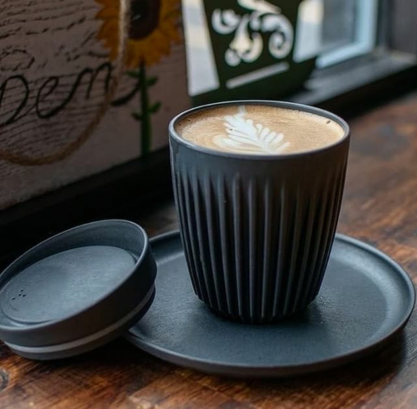
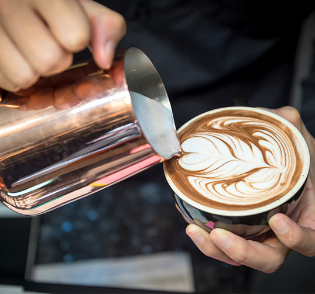

Taza para café
Taza Negra de 400ml termica.
Fabricada con productos reciclados.
Incluye Tapa Negra y Agarre de silicona.

Jarra Barista
Jarra Barista para Leche con medidor en el interior.
Capacidad 350ml , 600ml y 900ml de Acero Inoxidable Pulido.
Ideal para preparar Café Capuccino, Latte art.
Herramienta utilizada por baristas y amantes del café para controlar la caída de la leche en la taza.
Resistente a altas temperaturas, sin embargo al ser un metal no es recomendable colocar en el microondas.